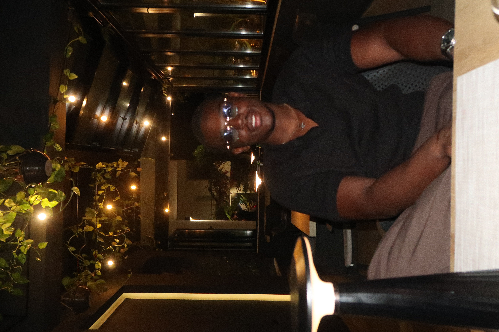

Vous êtes en Europe, vous avez un projet en Afrique de l'Ouest ou Centrale. Je vous guide étape par étape jusqu'à vos premiers revenus.
Plus que 5 places disponibles pour ce mois-ci
Avoir l'idée ne suffit pas. Les obstacles sont réels, et sous-estimés par ceux qui n'ont jamais créé depuis l'étranger.
Créer une SARL au Sénégal depuis Paris, ouvrir un compte bancaire professionnel, obtenir les licences… chaque étape est un mur sans guide local.
Les codes sont différents. Les négociations, les prix, la confiance : ce qui fonctionne en Europe peut être contre-productif à Abidjan ou Douala.
Manager une équipe, superviser des opérations, gérer la trésorerie — tout ça depuis l'Europe, avec le décalage horaire et les imprévus locaux.
Pas de formation générique. Pas de modèles préfabriqués. Un suivi personnalisé, adapté à votre projet, votre pays cible, et votre situation en Europe.
Trois paliers pour s'adapter à votre projet et votre ambition. Paiement en plusieurs fois disponible.

Abdoulaye n'est pas un consultant qui vous parle de l'Afrique depuis un bureau parisien. Il a lui-même traversé ce que vous vivez : construire une entreprise sur le continent, avec les contraintes de la distance, les codes culturels, et les défis administratifs.
Ancré entre l'Europe et l'Afrique de l'Ouest, il a développé une compréhension fine des deux écosystèmes. C'est précisément ce pont qu'il vous aide à traverser.
"Grâce à l'accompagnement d'Abdoulaye, j'ai pu ouvrir mon agence à Dakar en moins de 4 mois depuis Lyon. Il m'a évité des erreurs que j'aurais payées très cher, autant financièrement que relationnellement."
Remplissez ce formulaire de pré-qualification. Si votre profil correspond, vous recevrez un lien pour réserver un appel gratuit de 30 minutes avec Abdoulaye.
Merci pour votre message. Abdoulaye vous répondra dans les 24–48h avec la prochaine étape.